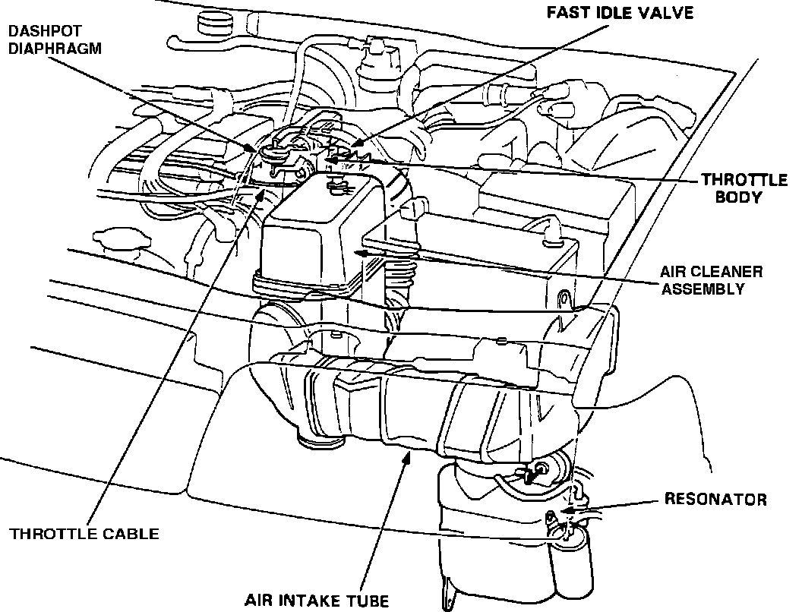

Air Cleaner Housing: Description and Operation
Air Intake System:

The air cleaner assembly filters intake air before it reaches the intake system. It is located in the left front area of the engine compartment between the air intake tube and the throttle body.
The air cleaner assembly contains a replaceable dry paper element.